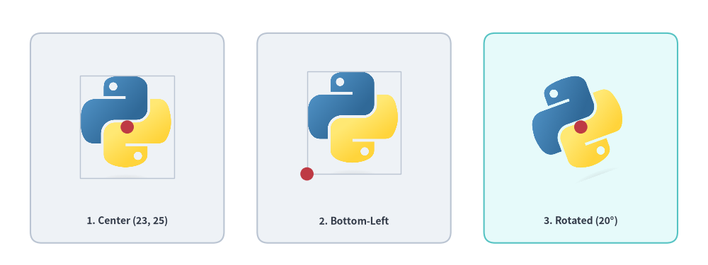
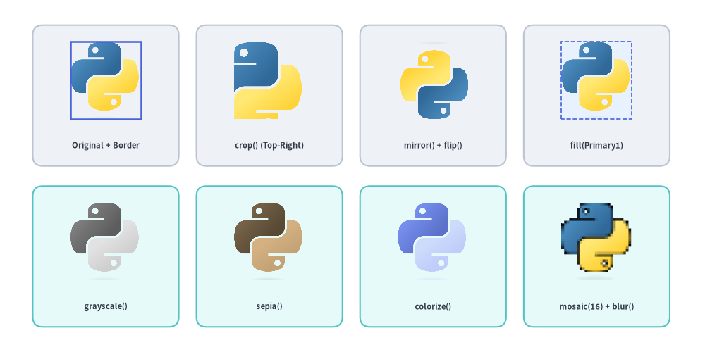

Images & Dimage Processing
Drawlib allows embedding external bitmap and vector images directly into your illustrations.
You can combine raster graphics (company logos, cloud service icons, application screenshots) with vector shapes and annotations, or manipulate graphics programmatically using the immutable in-memory Dimage model:

Source Code
from drawlib.canvas import save, setup
from drawlib.images import Dimage, image
from drawlib.shapes import rectangle
from drawlib.styles import Styles
from drawlib.text import text
setup(width=116, height=46)
# Card 1: Local image file
rectangle((33, 23), width=44, height=36, style=Styles.Neutral.patch(shape_r=3))
image((33, 26.5), width=18, image="../_assets/linux.png")
text((33, 10.5), "Linux Logo", style=Styles.DarkBold.patch(text_size=11.0))
# Card 2: Memory Dimage
rectangle((83, 23), width=44, height=36, style=Styles.SecondaryNeutral.patch(shape_r=3))
dimg = Dimage("../_assets/python.png")
image((83, 26.5), width=18, image=dimg)
text((83, 10.5), "Python Dimage", style=Styles.DarkBold.patch(text_size=11.0))
save()
1. Overview & Imports
Image placement and in-memory manipulation classes are imported from drawlib.images:
from drawlib.images import (
Dimage, # Immutable PIL Image wrapper with 20+ geometric & artistic transforms
get_dimage_from_code, # Render a Drawlib Python snippet in an isolated subprocess to a Dimage
image, # Draw a file path, PIL Image, or Dimage onto the canvas
)
2. Placing & Styling Images (image)
The image() function places an image on the canvas at coordinate xy, automatically preserving its original aspect ratio.
image(
xy: tuple[float, float],
width: float,
image: str | os.PathLike | Image.Image | Dimage,
*,
style: Style | None = None,
) -> None
| Parameter | Type | Default | Description |
|---|---|---|---|
xy |
tuple[float, float] |
Required | Anchor coordinate (x, y) in canvas units (centered by default). |
width |
float |
Required | Horizontal width in canvas units. Height scales automatically from the image aspect ratio. |
image |
str | Image.Image | Dimage |
Required | File path (.png, .jpg, .webp, resolved relative to the calling script), PIL Image.Image, or Dimage. |
style |
Style | None |
None |
Optional Style controlling border framing, background tinting, alignment, rotation, and opacity. |
2.1. Image & Transform Attributes on Style
When passing style= to image(), you can configure both image-specific image_* attributes and shared spatial transforms via .patch():
Style Attribute |
Type | Default | Description |
|---|---|---|---|
image_tint_color |
Color | tuple | str | None |
None |
Fills transparent background pixels of the image with a solid color via Dimage.fill(color). |
image_border_color |
Color | tuple | str | None |
(0, 0, 0) |
Stroke color of the rectangular border frame drawn around the image bounds. |
image_border_width |
float | None |
0 |
Border stroke width in points (0 or None disables the border). |
image_border_style |
"solid" | "dashed" | "dotted" | "dashdot" |
"solid" |
Stroke dash pattern of the image border rectangle. |
halign |
"left" | "center" | "right" |
"center" |
Horizontal anchor alignment relative to xy[0]. |
valign |
"bottom" | "center" | "top" |
"center" |
Vertical anchor alignment relative to xy[1]. |
xy_shift |
tuple[float, float] | None |
None |
Relative (dx, dy) coordinate shift rotated with angle. |
xy_abs_shift |
tuple[float, float] | None |
None |
Absolute (dx, dy) coordinate shift independent of angle. |
angle |
float | None |
0.0 |
Counter-clockwise rotation angle in degrees around the center of the image. |
alpha |
float | None |
1.0 |
Overall image and border opacity (0.0 transparent to 1.0 opaque). |
[!IMPORTANT] Rotation Requires Center Alignment (
angle != 0): Whenstyle.angleis non-zero,image()requires center alignment (halign="center",valign="center"). If a non-centerhalignorvalignis passed alongsideangle != 0, Drawlib logs a warning and automatically resets alignment to"center".
2.2. Anchor Alignment & Rotation Example
By default, (x, y) anchors the geometric center of the image. You can shift the anchor to the bottom-left corner via style.patch(halign="left", valign="bottom"), or rotate a center-anchored image via style.patch(angle=...):
from drawlib.canvas import save, setup
from drawlib.images import image
from drawlib.shapes import circle, rectangle
from drawlib.styles import Colors, Styles
from drawlib.text import text
setup(width=128, height=48, grid=True)
img_path = "../_assets/python.png"
framed = Styles.Neutral.patch(image_border_width=1.0, image_border_color=Colors.Gray4)
lbl_st = Styles.DarkBold.patch(text_size=10.0)
# 1. Default center anchor at xy=(23, 25)
rectangle((23, 23), width=35, height=38, style=Styles.Neutral.patch(shape_r=2))
image((23, 25), width=17, image=img_path, style=framed)
circle((23, 25), radius=1.2, style=Styles.DangerFlat)
text((23, 8.0), "1. Center (23, 25)", style=lbl_st)
# 2. Bottom-left anchor at xy=(55.5, 16.5)
rectangle((64, 23), width=35, height=38, style=Styles.Neutral.patch(shape_r=2))
bl_style = framed.patch(halign="left", valign="bottom")
image((55.5, 16.5), width=17, image=img_path, style=bl_style)
circle((55.5, 16.5), radius=1.2, style=Styles.DangerFlat)
text((64, 8.0), "2. Bottom-Left", style=lbl_st)
# 3. Rotated center placement at xy=(105, 25)
rectangle((105, 23), width=35, height=38, style=Styles.SecondaryNeutral.patch(shape_r=2))
rot_style = Styles.Neutral.patch(angle=20)
image((105, 25), width=17, image=img_path, style=rot_style)
circle((105, 25), radius=1.2, style=Styles.DangerFlat)
text((105, 8.0), "3. Rotated (20°)", style=lbl_st)
save()

3. In-Memory Image Manipulation (Dimage)
Dimage wraps a PIL.Image.Image object in an immutable, chainable API. Every transformation method returns a new Dimage instance while keeping the original Dimage unchanged.
from drawlib.images import Dimage
from drawlib.styles import Colors
# 1. Load from file (or wrap an existing PIL Image / Dimage)
dimg = Dimage("../_assets/python.png")
# 2. Inspect pixel dimensions
width_px, height_px = dimg.get_image_size()
# 3. Fill transparent background pixels with a solid color (keeps opaque foreground intact)
filled_bg = dimg.fill(Colors.Primary1)
# 4. Chain geometric and artistic filters immutably
processed = dimg.mirror().grayscale().brightness(1.1)
[!NOTE]
dimg.fill(color)Semantics:dimg.fill(color)fills transparent background pixels withcolor—compositing semi-transparent edge pixels overcolorwhile preserving all opaque foreground pixels as-is. To recolor the foreground tones of an image, usedimg.colorize(from_black_to=..., from_white_to=...).
3.1. I/O, Cloning & Inspection Methods
| Constructor / Method | Signature | Description |
|---|---|---|
Dimage() |
Dimage(image: str | PathLike | Dimage | Image.Image, copy: bool = False) |
Initializes a Dimage from a file path (resolved relative to the caller script), a PIL Image.Image, or another Dimage. |
get_image_size() |
get_image_size() -> tuple[int, int] |
Returns the pixel dimensions (width, height). |
get_pil_image() |
get_pil_image() -> Image.Image |
Returns a defensive copy of the underlying PIL.Image.Image. |
copy() |
copy() -> Dimage |
Returns a deep-copied Dimage instance. |
save() |
save(file: str, quality: int = 95) -> None |
Writes the image to file (creating parent directories if needed; quality is 0..100, default 95). |
3.2. Geometry & Cropping Methods (5 Methods)
| Method | Signature | Description |
|---|---|---|
resize() |
resize(width: int, height: int, resample: str = "lanczos") -> Dimage |
Resizes to (width, height) pixels using "nearest", "box", "bilinear", "hamming", "bicubic", or "lanczos". |
crop() |
crop(x: int, y: int, width: int, height: int) -> Dimage |
Crops a (width, height) pixel box where the origin (0, 0) is at the bottom-left corner (matching Drawlib's Cartesian coordinate space). |
trim() |
trim(color: str | Color | tuple | None = "auto", tolerance: int = 0) -> Dimage |
Auto-crops uniform surrounding margins ("auto" detects background color/transparency from the 4 corners; None trims transparent alpha margins; tolerance is 0..255). |
flip() |
flip() -> Dimage |
Flips the image vertically (top-to-bottom). |
mirror() |
mirror() -> Dimage |
Mirrors the image horizontally (left-to-right). |
3.3. Transparency & Background Methods (3 Methods)
| Method | Signature | Description |
|---|---|---|
fill() |
fill(color: Color | tuple[int, int, int]) -> Dimage |
Fills transparent background pixels with color (alpha-compositing semi-transparent edges over color while keeping opaque foreground pixels intact). |
make_transparent() |
make_transparent(color: str | Color | tuple | Literal["auto"] = "auto", tolerance: int = 0) -> Dimage |
Converts a solid background color (auto-detected from corners when "auto", or a specific color within tolerance 0..255) into transparent alpha (RGBA). |
alpha() |
alpha(alpha: float) -> Dimage |
Caps pixel opacity at alpha (0.0 transparent to 1.0 opaque), preserving any existing pixel alpha lower than alpha. |
3.4. Color & Artistic Filter Methods (9 Methods)
| Method | Signature | Description |
|---|---|---|
grayscale() |
grayscale() -> Dimage |
Converts the image to grayscale while preserving alpha (LA mode). |
sepia() |
sepia() -> Dimage |
Applies a warm vintage sepia tone while preserving the alpha mask. |
invert() |
invert() -> Dimage |
Inverts RGB channels (255 - c) while keeping the original alpha channel intact. |
brightness() |
brightness(brightness: float = 0.5) -> Dimage |
Scales image brightness (1.0 = unchanged, < 1.0 = darker, > 1.0 = brighter; default 0.5). |
colorize() |
colorize(from_black_to: ColorType, from_white_to: ColorType, from_mid_to: ColorType | None = None) -> Dimage |
Maps grayscale luminance from black to from_black_to, white to from_white_to, and optional mid-tones to from_mid_to while preserving alpha. |
posterize() |
posterize(num_colors: int = 4) -> Dimage |
Reduces color bit depth per RGB channel (num_colors bits, default 4) while preserving alpha. |
mosaic() |
mosaic(block_size: int = 8) -> Dimage |
Pixelates the image into block_size × block_size average-color blocks (default 8). |
blur() |
blur() -> Dimage |
Applies a smoothing convolution blur filter (PIL.ImageFilter.BLUR). |
line_extraction() |
line_extraction() -> Dimage |
Extracts high-contrast morphological contour outlines (line-art sketch effect). |
3.5. Visual Showcase: Dimage Geometry, Filters & Border Styling
from drawlib.canvas import save, setup
from drawlib.images import Dimage, image
from drawlib.shapes import rectangle
from drawlib.styles import Colors, Styles
from drawlib.text import text
setup(width=132, height=66)
base = Dimage("../_assets/python.png")
w_px, h_px = base.get_image_size()
# Row 1: Geometry, Background Fill & Image Border Styling
row1 = [
("Original + Border", base, Styles.Primary.patch(image_border_width=1.8, image_border_color=Colors.Primary)),
("crop()", base.crop(w_px // 4, h_px // 4, w_px * 3 // 4, h_px * 3 // 4), None),
("mirror() + flip()", base.mirror().flip(), None),
("fill(Primary1)", base.fill(Colors.Primary1), Styles.Primary.patch(image_border_width=1.2, image_border_style="dashed", image_border_color=Colors.Primary4)),
]
for idx, (label, dimg_item, img_st) in enumerate(row1):
cx = 19.5 + idx * 31
rectangle((cx, 48), width=28.5, height=27, style=Styles.Neutral.patch(shape_r=2))
image((cx, 51.5), width=13.5, image=dimg_item, style=img_st)
text((cx, 38.5), label, style=Styles.DarkBold.patch(text_size=10.0))
# Row 2: Color & Artistic Filter Pipelines
row2 = [
("grayscale()", base.grayscale()),
("sepia()", base.sepia()),
("colorize()", base.colorize(Colors.Primary6, Colors.Primary1, Colors.Primary3)),
("mosaic() + blur()", base.mosaic(block_size=16).blur()),
]
for idx, (label, dimg_item) in enumerate(row2):
cx = 19.5 + idx * 31
rectangle((cx, 18), width=28.5, height=27, style=Styles.SecondaryNeutral.patch(shape_r=2))
image((cx, 21.5), width=13.5, image=dimg_item)
text((cx, 8.5), label, style=Styles.DarkBold.patch(text_size=10.0))
save()

4. Dynamic In-Memory Rendering (get_dimage_from_code)
Drawlib can execute a snippet of Drawlib Python code dynamically and return the rendered canvas directly as an in-memory Dimage. This enables recursive composition, zoomed inset callouts, and reusable sub-diagram templates.
get_dimage_from_code(
code: str,
timeout: float | None = None,
) -> Dimage
| Parameter | Type | Default | Description |
|---|---|---|---|
code |
str |
Required | Complete Drawlib Python code snippet to execute. |
timeout |
float | None |
None |
Maximum allowed execution time in seconds (None = no timeout). Raises TimeoutError if exceeded. |
Subprocess Isolation Guarantees
- Clean Process Boundary:
get_dimage_from_code()runscodeinside an isolatedmultiprocessing.Processworker so the parent script's active canvas dimensions, artists,Styles, and Matplotlib global state remain completely untouched. - Automatic
save()Interception: Anysave()calls insidecodeare automatically intercepted as no-ops in the worker process, preventing stray files from being written to disk before the rendered canvas is returned over an IPC pipe as aDimage.
from drawlib.canvas import save, setup
from drawlib.images import get_dimage_from_code, image
from drawlib.shapes import rectangle
from drawlib.styles import Styles
from drawlib.text import text
# 1. Render a sub-component in an isolated subprocess with a 10s safety timeout
sub_code = """
from drawlib.canvas import save, setup
from drawlib.shapes import circle
from drawlib.styles import Styles
setup(width=40, height=40)
circle((20, 20), radius=15, style=Styles.PrimaryFlat, text="Pod", text_style=Styles.WhiteBold.patch(text_size=36))
save()
"""
sub_diagram = get_dimage_from_code(sub_code, timeout=10.0)
# 2. Embed the sub-diagram onto the primary canvas
setup(width=100, height=48)
rectangle((50, 24), width=74, height=38, style=Styles.MutedDashed)
image((50, 27), width=26, image=sub_diagram)
text((50, 10), "Host Canvas with Embedded Sub-Diagram", style=Styles.DarkBold.patch(text_size=11.0))
save()